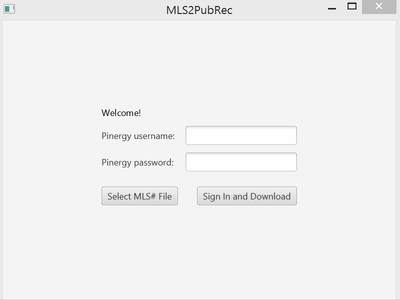
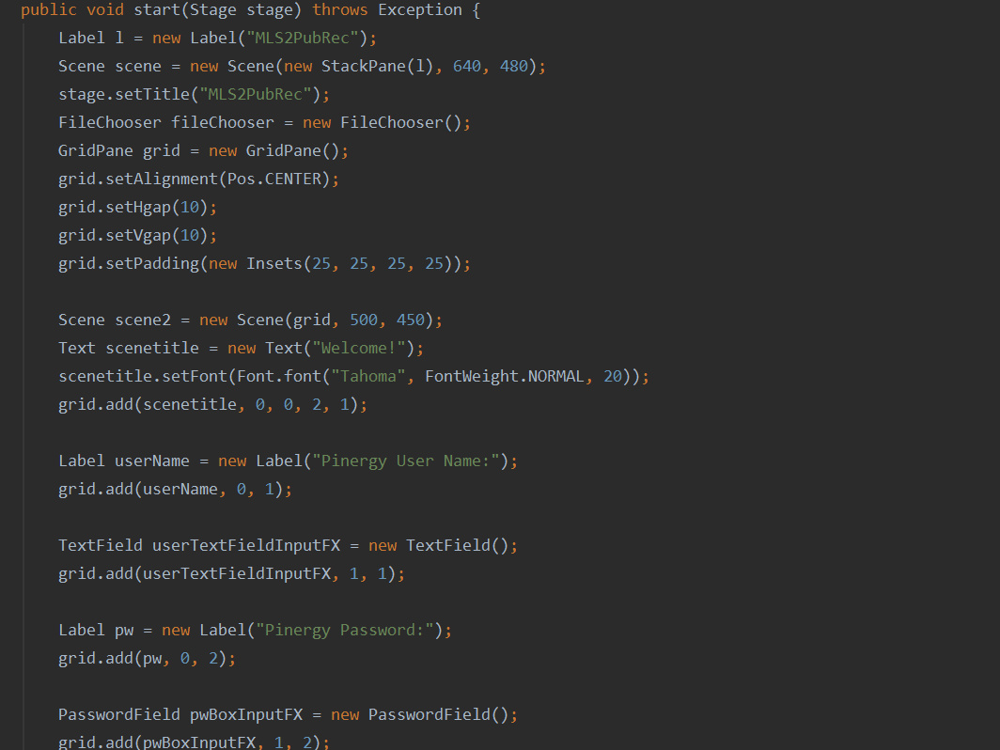
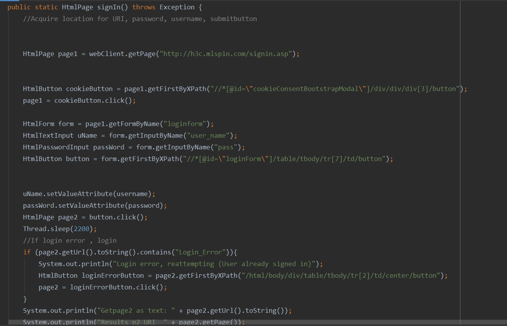

Unfortunutley I cannot show all the results, due to privacy concerns.
To summarize its function my application takes in a list of listing numbers, uses headless browsing via the Gargoylesoft.HTMLUNIT package to access an online repository to download associated public records.

This code shows the MLS numbers getting inserted into the resultant records. This solves the issue of these records not having the listing number not being appended by default.

This code shows some of the JavaFX code the program uses. I had not used JavaFX previously. Coming from HTML/CSS it seems fast yet inflexible.

Here's the function for actually signing into the website. I had to use a few different methods to capture the neccesary elements.
